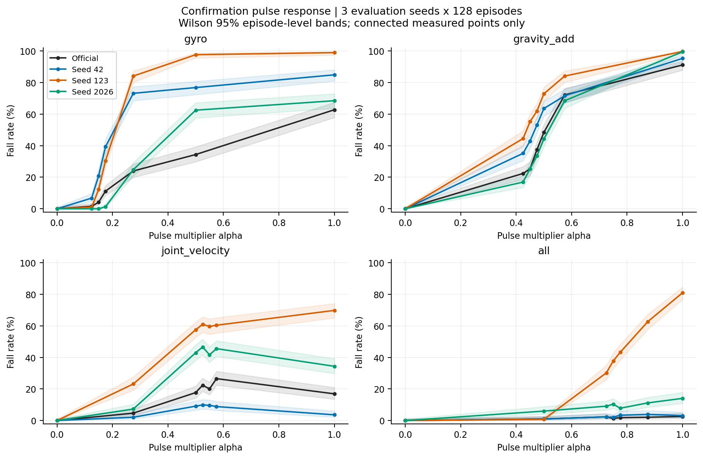
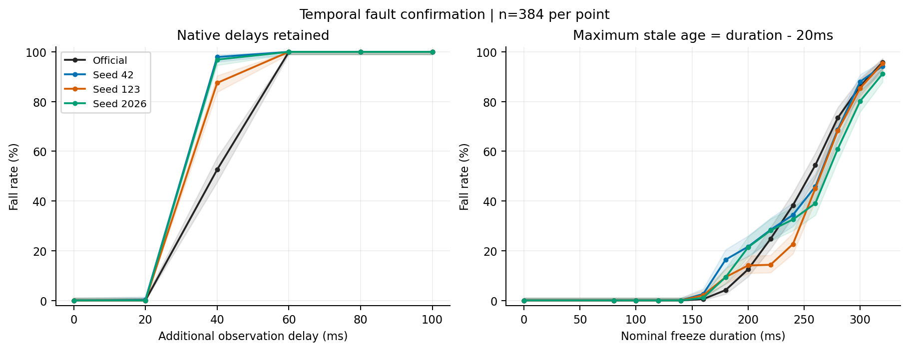
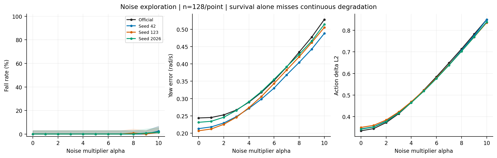
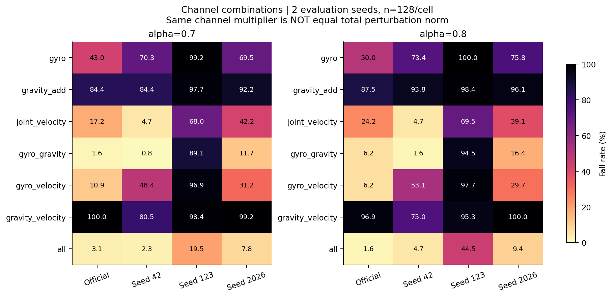
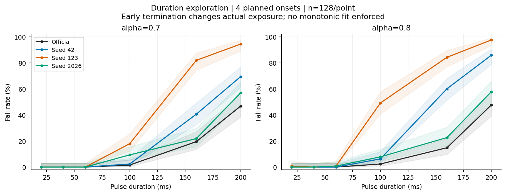
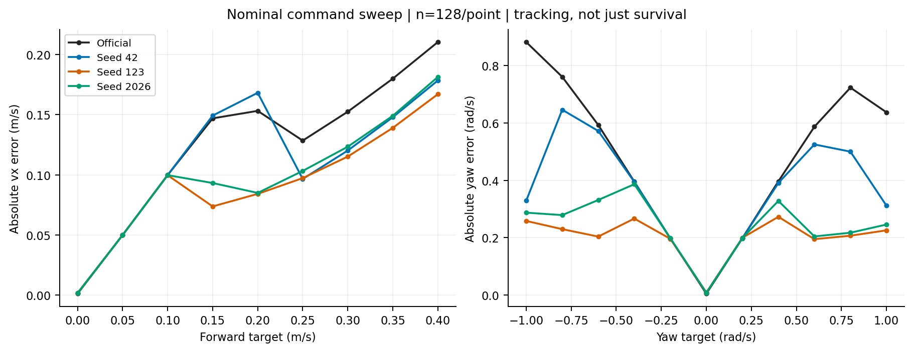
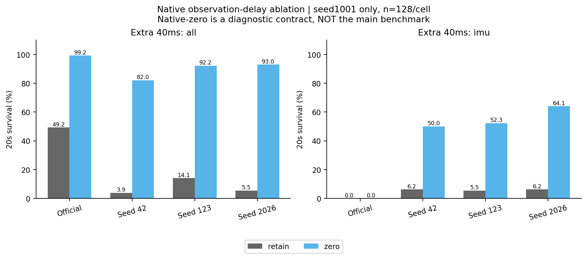
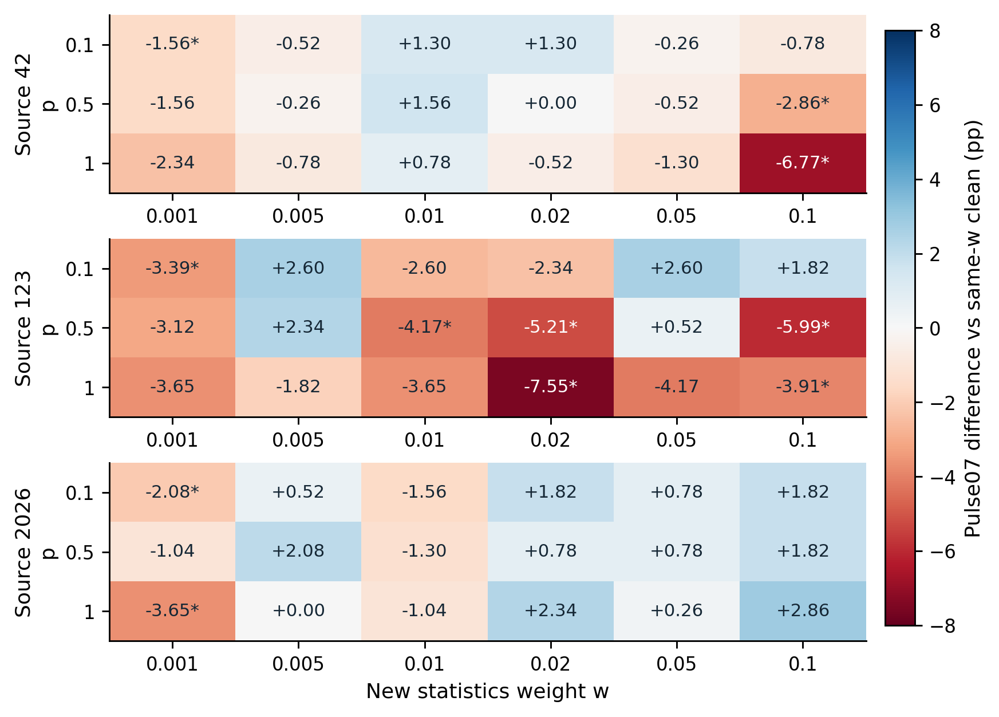
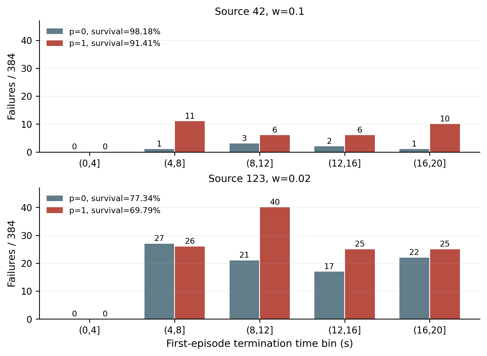
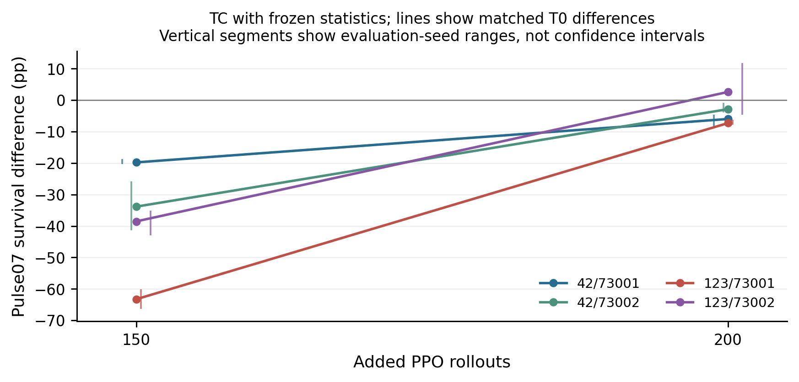

07 论文报告与统一视频研究报告
图表与视频已经形成可追溯的解释材料，但它们是已有实验的不同表达，不是额外训练或新增统计样本。
整理日期 2026年10月15日 本轮仅分析已有数据 不新增实验
工作范围
既有2026-10-13报告7张图、精细基准36张原图、12段正式20秒说明视频；另索引2026-10-15论文3张图。
我们如何完成这项工作
12段正式视频为四模型各clean、联合脉冲alpha0.7和0.8，固定Forward、seed91201、同相机640×480、50fps、1000帧。首次终止后填充末帧并显示FALL/TERMINATED，不拼接reset。已有逐段解码和SHA核验记录一并索引。
现有结果及解释
1. 7张旧论文图分别整理脉冲确认、时序故障、噪声连续指标、通道组合、持续时间、命令扫描和原生延迟。它们的分母、探索/确认身份应以各图注及REPORT_DATA为准。
2. 新的三张论文图概括T clean尾段恢复、900完整配对网格与失败时序。它们只重新表达已有N/T/900数据，不能和原曲线再累计样本。
3. 一段视频展示一个独立说明回合，不能凭它判断总体概率；20秒观看未跌倒也不能证明任务跟踪准确或实体安全。
完整结果表
阶段、条件和命令分别保留。未记录的指标显示未记录，不按0填充。表内百分比为存活，不是任务成功率。
查看本工作全部12个汇总单元
图表及读图注释
读图注释 “原图36张”是精细基准图文件数，不等于36种独立实验。总图册同时保留各图原路径和文件哈希，字节相同的图只复制一份。
读图注释 图上的误差条必须按来源说明：Wilson、回合bootstrap、评估seed范围含义不同，不能统一称为95%训练总体置信区间。
英文坐标速查：survival 是规定时长存活，不是任务完成率；duration / seconds 是首回合有效寿命；vx 是前向速度，XY 是平面速度；yaw 是绕竖直轴旋转；MSE 是动作拟合平方误差；pp 是百分点，例如90%到80%为下降10个百分点。完整解释见读图指南。
图1 fig1 pulse confirmation

既有论文选图，同一实验可能也在第5/15/16报告出现；只是不同表达，不增加样本。图中星号/误差条必须按原图解释。图2 fig2 temporal confirmation

既有论文选图，同一实验可能也在第5/15/16报告出现；只是不同表达，不增加样本。图中星号/误差条必须按原图解释。图3 fig3 noise metrics

既有论文选图，同一实验可能也在第5/15/16报告出现；只是不同表达，不增加样本。图中星号/误差条必须按原图解释。图4 fig4 combinations

既有论文选图，同一实验可能也在第5/15/16报告出现；只是不同表达，不增加样本。图中星号/误差条必须按原图解释。图5 fig5 duration

既有论文选图，同一实验可能也在第5/15/16报告出现；只是不同表达，不增加样本。图中星号/误差条必须按原图解释。图6 fig6 commands

既有论文选图，同一实验可能也在第5/15/16报告出现；只是不同表达，不增加样本。图中星号/误差条必须按原图解释。图7 fig7 native delay

既有论文选图，同一实验可能也在第5/15/16报告出现；只是不同表达，不增加样本。图中星号/误差条必须按原图解释。图8 dose grid

既有论文选图，同一实验可能也在第5/15/16报告出现；只是不同表达，不增加样本。图中星号/误差条必须按原图解释。图9 failure timing

既有论文选图，同一实验可能也在第5/15/16报告出现；只是不同表达，不增加样本。图中星号/误差条必须按原图解释。图10 training recovery

既有论文选图，同一实验可能也在第5/15/16报告出现；只是不同表达，不增加样本。图中星号/误差条必须按原图解释。限制与不能支持的结论
本次只核对已有视频文件与manifest中的SHA，不重新录制；逐段完整解码结论来自既有解码核验记录。未覆盖所有条件每个回合的完整机械遥测。
证据入口与复核范围
逐文件SHA及原始路径见输入清单；本轮复算范围见数据审计。下列输入在生成后再次核对未改。
这项工作的价值
价值是把数字、协议与可见行为连接起来，让导师或复核者发现任务语义、reset拼接和失效阶段等纯均值表格难以暴露的问题。可视化是证据解释工具，而非新增实验成果。